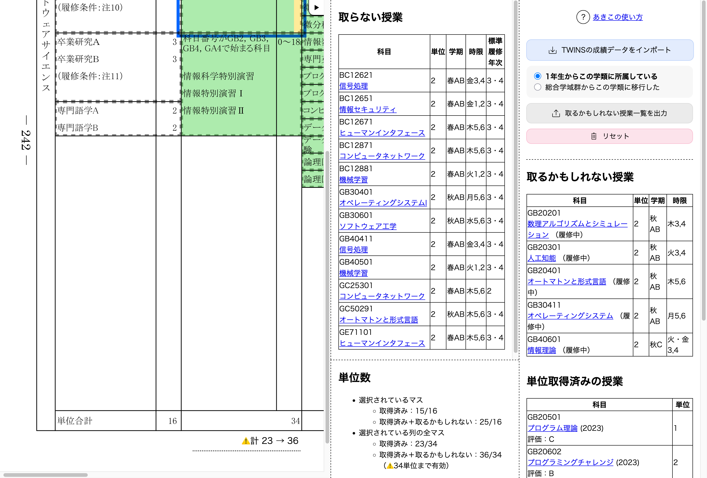

自分の学類と入学年度に対応するページを開きます。 ここでは履修要覧とそれぞれのマスに当てはまる授業の一覧を見ることができます。 マスを選択すると、当てはまる授業の一覧が「取らない授業」の欄に表示されます。 それぞれのマスに該当する授業だけを見ることで、履修する授業を楽に探すことができます。 表示された授業を右側にドラッグ&ドロップすることで、「取るかもしれない授業」に移動することができます。 移動された授業の単位は「取るかもしれない」単位として計上されます。 また、TWINSからダウンロードできる成績データをあきこにインポートすることで、現在の自分の履修状況を踏まえた授業探しが可能になります。  すでに成績がついている授業は「単位取得済みの授業」、まだ履修中で成績がついていない授業は「取るかもしれない授業」となります。 単位の取得状況や合計を考慮することで、履修する授業がさらに探しやすくなります。
これでダウンロードされるファイルがTWINSの成績ファイルです。 このファイルをあきこにインポートすることで、現在の自分の履修状況を踏まえた授業探しをすることができます。
あきこは「取るかもしれない」授業の科目番号の一覧をCSVファイルとして出力することができます。 以下の手順でこのファイルをTWINSにインポートすることで、「取るかもしれない」に移動した授業をTWINSにまとめて履修登録することができます。
⚠️ 履修中の授業を「取るかもしれない授業」から「取らない授業」に移動してから、TWINSに「取るかもしれない授業」をインポートしても、移動した授業の履修解除はされません。
⚠️ 上記の方法では、事前登録の必要がある授業をTWINS上で履修登録することができません。 そのため、「取るかもしれない授業」のうち事前登録の授業はCSVファイルに含まれません。 事前登録の授業を履修する場合は、別途手動で事前登録をする必要があります。